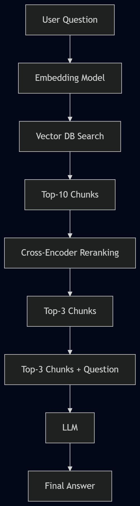
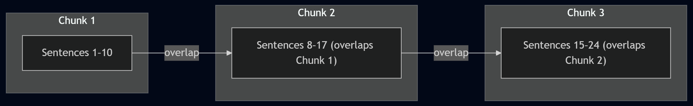

7. What is RAG? (Retrieval-Augmented Generation)#
This chapter explains the core concepts behind Retrieval-Augmented Generation from the ground up. By the end, you will understand why RAG exists, how every component works, and when to use it.
7.1. 1. The Problem RAG Solves#
Imagine you are building a customer support chatbot for your company. Your product manual is 500 pages long. You have a powerful LLM like GPT-4o or DeepSeek, but:
Approach |
Problem |
|---|---|
Ask the LLM directly |
It has never seen your internal docs → hallucination |
Paste the entire manual into the prompt |
Too long → exceeds context window, slow, expensive, loses focus |
Paste only relevant paragraphs |
✅ Perfect — but how do you find the “relevant” parts automatically? |
RAG is the answer to that third question. It retrieves the most relevant pieces of your documents, then feeds them — alongside the user’s question — to the LLM for generation.
RAG = Retrieve first, then Generate.
7.2. 2. The Two Phases of RAG#
The entire RAG pipeline splits cleanly into two phases:
Phase A — Data Preparation (Before the user asks)
Chunking: Split documents into small pieces.
Indexing: Convert each chunk into a vector and store it in a vector database.
Phase B — Answering (After the user asks)
Retrieval: Find the top-N most relevant chunks.
Reranking: Refine the ranking for higher accuracy.
Generation: Feed the top chunks + question to the LLM for a final answer.
Phase A: Data Preparation

Phase B: Answering

7.3. 3. Chunking: Splitting Documents#
Chunking is the process of breaking a large document into smaller, manageable pieces. The quality of your chunks directly impacts the quality of your answers.
7.3.1. Common Chunking Strategies#
Strategy |
Description |
Pros |
Cons |
|---|---|---|---|
Fixed-size |
Split every N characters (e.g., 1000 chars) |
Simple, predictable |
May cut mid-sentence |
Sentence-based |
Split by sentence boundaries |
Preserves meaning |
Some sentences are too short |
Paragraph-based |
Split by paragraph ( |
Natural text units |
Paragraphs vary wildly in size |
Recursive |
Try paragraph → sentence → character |
Best general approach |
More complex to implement |
Semantic |
Use an LLM to determine natural break points |
Highest quality |
Slow and expensive |
7.3.2. The Overlap Trick#
When chunks are split at a boundary, context can be lost. For example:
“Dr. Wang is a leading researcher in urban computing. He developed a novel algorithm…”
If “Dr. Wang” is in Chunk 1 and “He” starts Chunk 2, the pronoun loses its reference. The solution is overlapping chunks — each chunk includes the last few sentences of the previous one:

7.4. 4. Embedding: Turning Text into Vectors#
7.4.1. What is a Vector?#
A vector is simply an array of numbers. In the context of RAG:
A 1-dimensional vector:
[3.0]A 2-dimensional vector:
[1.0, -2.0]A 768-dimensional vector:
[0.12, -0.45, 0.78, ..., 0.33](768 numbers!)
Real embedding models produce vectors with hundreds to thousands of dimensions (e.g., 768 or 1536). More dimensions = richer semantic representation.
7.4.2. What is Embedding?#
Embedding is the process of converting text into a fixed-length vector using a specialized Embedding Model. The key property is:
Semantically similar text produces vectors that are close together in vector space.
For example (simplified to 2D for visualization):
“Mark likes to eat fruit” →
[1.0, -2.0]“Mark loves eating fruit” →
[1.1, -1.8]← very close!“The weather is nice today” →
[-3.0, -1.0]← very far away
7.4.3. Popular Embedding Models#
Model |
Dimensions |
Provider |
|---|---|---|
|
1536 |
OpenAI |
|
3072 |
OpenAI |
|
384 |
Sentence Transformers (free) |
|
768 |
Nomic / Ollama (free, local) |
|
1024 |
BAAI (free) |
💡 Tip: Check the MTEB Leaderboard to compare embedding model quality.
7.5. 5. Vector Databases#
A vector database is a specialized storage system optimized for storing, indexing, and querying vectors.
7.5.1. How It Works#
Each record in a vector database typically stores:
An ID (unique identifier)
The original text (the chunk)
The vector (embedding of the chunk)
When you query with a new vector, the database calculates the distance between your query vector and every stored vector, then returns the closest matches.
7.5.2. Popular Vector Databases#
Database |
Type |
Best For |
|---|---|---|
ChromaDB |
In-memory / persistent |
Prototyping, small projects |
Pinecone |
Managed cloud service |
Production, zero-ops |
Weaviate |
Self-hosted / cloud |
Full-text + vector hybrid search |
Qdrant |
Self-hosted / cloud |
High-performance filtering |
pgvector |
PostgreSQL extension |
Teams already using PostgreSQL |
FAISS |
Library (Meta) |
Research, large-scale similarity |
LanceDB |
Embedded (AnythingLLM default) |
Desktop apps, serverless |
7.6. 6. Vector Similarity: How “Closeness” is Measured#
When the vector database searches for the chunks most similar to the user’s question, it uses a similarity metric:
Metric |
What It Measures |
Intuition |
|---|---|---|
Cosine Similarity |
Angle between two vectors |
Smaller angle = more similar |
Euclidean Distance |
Straight-line distance |
Shorter distance = more similar |
Dot Product |
Combines direction + magnitude |
Higher value = more similar |
For most RAG applications, cosine similarity is the default and most reliable choice.
7.7. 7. Retrieval: Finding Relevant Chunks#
When a user asks a question:
The question is embedded into a vector using the same embedding model.
This vector is sent to the vector database.
The database returns the Top-K most similar chunks (e.g., Top-10).
This step is fast but imprecise — like screening resumes by keyword. It casts a wide net.
7.8. 8. Reranking: Precision Filtering#
The retrieval step returns 10 chunks, but some may be false positives. Reranking uses a more powerful (but slower) model called a Cross-Encoder to re-score each chunk.
7.8.1. How is Reranking Different from Retrieval?#
Aspect |
Retrieval (Embedding) |
Reranking (Cross-Encoder) |
|---|---|---|
Speed |
⚡ Very fast |
🐢 Slower |
Cost |
💰 Low |
💰💰 Higher |
Accuracy |
🎯 Moderate |
🎯🎯🎯 High |
Scale |
Thousands of chunks |
Only 10–20 chunks |
Think of it like a job hiring process:
Retrieval = Screening 1,000 resumes → shortlist 10 candidates
Reranking = Interviewing 10 candidates → hiring the top 3
7.9. 9. Generation: Producing the Final Answer#
Finally, the top 3 reranked chunks and the user’s question are combined into a prompt and sent to a large language model (e.g., GPT-4o, Gemini, DeepSeek):
Based on the following context, answer the user's question.
If the answer is not in the context, say "I don't know."
Context:
[Chunk 1 text]
[Chunk 2 text]
[Chunk 3 text]
Question: What methodology did the authors use?
The LLM generates a grounded, accurate answer based on the retrieved evidence.
7.10. 10. Known Limitations of RAG#
RAG is powerful, but it is not perfect:
Limitation |
Description |
|---|---|
Chunking artifacts |
Important info may be cut at chunk boundaries, losing co-reference (e.g., “He” loses link to “Dr. Wang”). |
Poor at global questions |
“How many times does ‘watermelon’ appear?” requires scanning ALL chunks, not just the most similar ones. |
Embedding quality ceiling |
Embedding models compress meaning — subtle nuances can be lost. |
Hallucination still possible |
If retrieved chunks are marginally relevant, the LLM may still interpolate incorrectly. |
Solutions: Advanced chunking strategies, Graph RAG (covered in Tutorial 03), hybrid search (combining keyword + vector), and agentic RAG with iterative retrieval.
7.11. Read More#
Retrieval-Augmented Generation for Knowledge-Intensive NLP Tasks (Original RAG Paper) — Lewis et al., 2020. The foundational paper introducing RAG.
MTEB Embedding Leaderboard — Compare embedding model performance.
ChromaDB Documentation — Getting started with the popular open-source vector database.
Pinecone Learning Center: What is RAG? — Visual, beginner-friendly RAG explainer.
LangChain RAG Tutorial — Step-by-step RAG implementation using LangChain.
LlamaIndex Documentation — Another popular framework for building RAG pipelines.
Sentence Transformers Library — Open-source library for embedding and cross-encoder models.
7.12. Knowledge Quiz#
Q1: Why can’t you simply paste an entire 500-page document into an LLM’s prompt instead of using RAG?
Answer
Three reasons: (1) The document may exceed the model's context window limit (2) More input = higher cost per query (3) More input = slower response time and the model may lose focus on relevant sections.Q2: What is the fundamental difference between an Embedding Model and a Large Language Model (LLM)?
Answer
An Embedding Model converts text into a fixed-length numerical vector (e.g., 768 or 1536 dimensions) that captures semantic meaning. An LLM generates natural language text as output. They serve fundamentally different roles in the RAG pipeline — embedding for search, LLM for generation.Q3: Why does a RAG pipeline use both Retrieval AND Reranking instead of just one step?